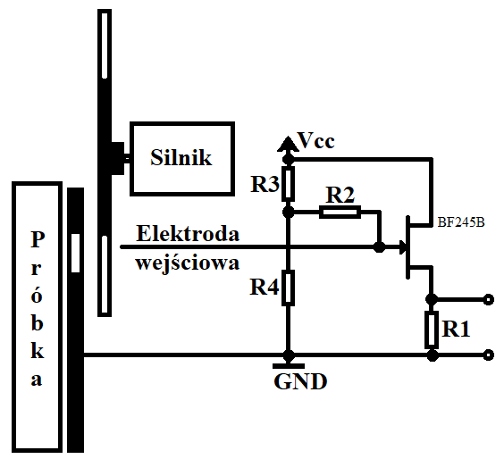
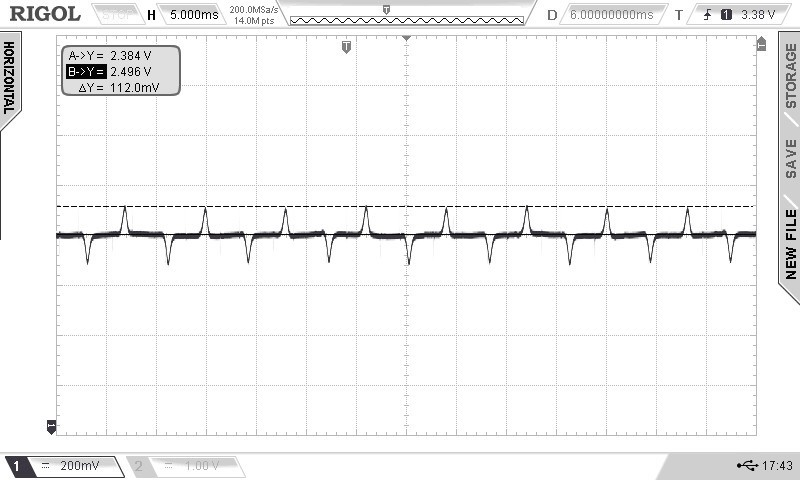
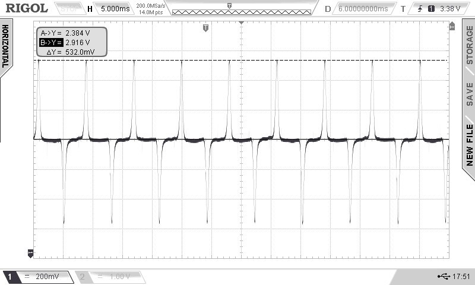
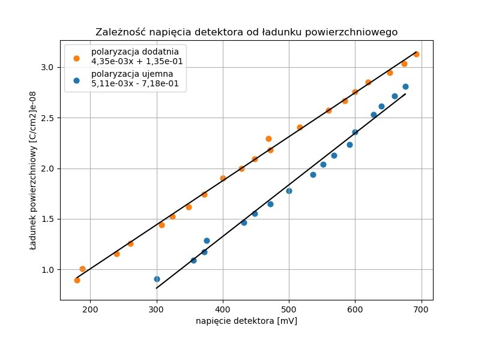

When it comes to measuring voltage we usually make it happen by introducing some apparatus in contact with the object. But sometimes, the voltage is either too high or the charge is very small which makes the measurement hard or simply not applicable. Electroscope is a device not measuring voltage directly but the presence of charge. Each charged object is exhibiting an electric field which fades with a square. We can test for presence of charge without destroying it by observing induction. I found that the perfect fit for this task is a FET transistor as it’s very sensitive to noise (when not grounded nor shielded). First test of the primitive electroscope was conducted by utilizing a circuit made by FET, battery, LED and a resistor connected in series with the FET gate left unconnected. The results were very surprising. Circuit, while left on a table, could detect a charge coming from a marker rubbed with a cloth from more than 3 meters, signalizing it with a flash of LED. Despite such sensitivity, the measurement was not at all accurate as the device was only shoving a change in surrounding field and the LED was not giving sufficient feedback to determine the strength of the field. To solve this problems i introduced a chopper to modulate the input and a shielding plate to cut off unwanted noise and normalize the results. Such circuit schematic is shown below.
The gate of FET was connected through a high value resistor to a voltage divider to set the resting voltage. This way if there was any fluctuation in charge on the input it would disrupt the balanced state manifesting in a positive or negative voltage spike. Voltage drop on the R1 resistor was measured using oscilloscope tuned to the chopper. Observed output, while using electrostatically charged Teflon plate is shown below.
 Base level fluctuations can be attributed to a hand made chopper which introduced vibration. The peaks can give us information on the strength of the field picked up by circuit. As the measurement is conducted always in the same proximity from the sample and using a shield limited to a circle of 5 mm radius we can calibrate this device using a metal plate hooked up to a high voltage generator instead of Teflon one. Peak height to calculated charge ratio is shown below both for positive (orange) and negative (blue) charge.
In the region of interest characteristics were linear but different for negative and positive charge. For my purposes this device is accurate enough and provides violable data. Examples of measurements will be shown in later post when measuring the field produced by electrets. The prototype of this device, while bulky, was a cheap alternative to modern electronic electroscope. Future modifications will include replacing the chopper with a transistor square wave generator (periodically shorting the input), applying an amplifier to normalize the output and a circuit to convert output to a constant voltage response instead of peaks in time. That way the measurement will be possible without using oscilloscope and the device size will be limited to a few centimeters while increasing its accuracy as well as making the measurement much more easy and fast.